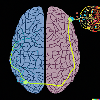
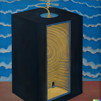
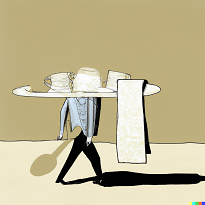
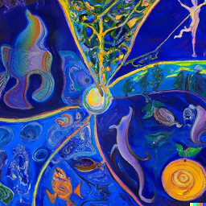
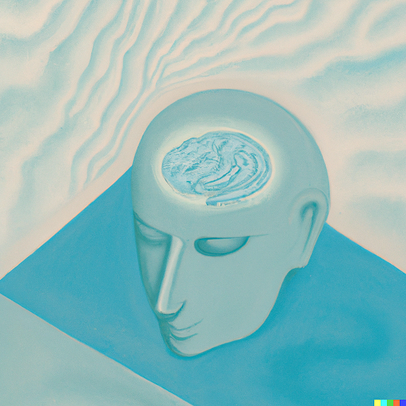
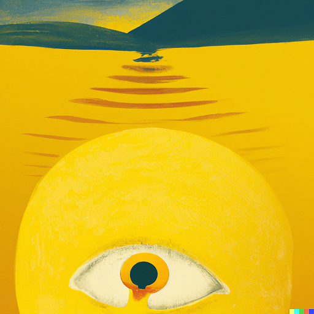
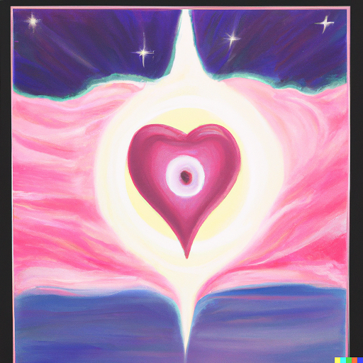
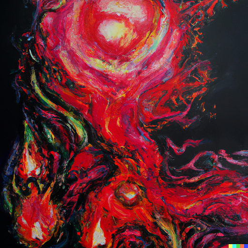
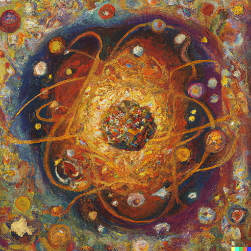

The brain and mind are not the same.
Philosophy has, throughout the course of human civilization, proposed that the mind is something more than the connections in the brain. Something intangible. The thoughts, ideas, concepts, sensations, emotions, intuitions, and imaginations that we conceive of as the mind exist somewhere in a space between. A space that remains unquantifiable by even the most high-fidelity map of every neuron and every connection in the human brain. Science, for all its’ utility and ability to explain complex phenomena, may be unable to grapple with the nuances of the mind. Explorers of a different kind venture inward into the vast oceans, seeking the unknowable that has inspired human thought for millennia.

Unpacking the black box...
 The contents of the mind have been referred to as a “black box” of the unknown. First conceptualized by American psychologist and behavioralist B.F. Skinner, the box describes that which traditional behavioralists believe to be unobservable. Skinner believed that what we perceive of as free will is an illusion created by repeated reinforcement of response to stimuli. We can alter the outputs (response) by altering the inputs (stimulus). Others argue that this is not the entire story. That consciousness is more nuanced, and that the black box can be opened. Free will is deeper than stimulus and response, and that the perception of having free will is enough to confirm its existence. Opening Skinner’s black box reveals everything between stimulus and response to reconstruct the oneness of the mind.
The
Continents of the Mind
Annika Anderson, Luke Chamberlain,
Randi Selvey
Based on the work of Dr. Logan Edwards, UW-Whitewater
Much like early attempts by explorers to chart previously unexplored lands, this map is rudimentary
and far from complete.
A first blurry-eyed sketch with eyes not yet fully opened...
Body
Conscious Mind

Subjectivity
Ego
 The ego moderates the unrealistic id to govern how one ought to act in the world. Freud suggested that all behavior is motivated by self-interest seeking to maximize pleasure and minimize displeasure. Behaving in this way, however, is untenable and must be balanced by the altruistic ego.
The ego moderates the unrealistic id to govern how one ought to act in the world. Freud suggested that all behavior is motivated by self-interest seeking to maximize pleasure and minimize displeasure. Behaving in this way, however, is untenable and must be balanced by the altruistic ego.
Anti-Ego

Others
Will
Freedom
Unconscious Mind
Objectivity
Consciousness exists, not in one place at one
time but across five planes corresponding to the five
colors on the map.
The Body
The Brain

The Mind

The Heart

The Soul

As the mind wanders through the continents, patterns emerge.
what was first an unknown connection, becomes a well-worn route.
The continents of the mind rest in the conflux of two vast oceans…
Everything

nothingness.
nothingness.
nothingness.
nothingness.
nothingness.
nothingness.
nothingness.
nothingness.
nothingness.
nothingness.
nothingness.
nothingness.
nothingness.
nothingness.
nothingness.
nothingness.